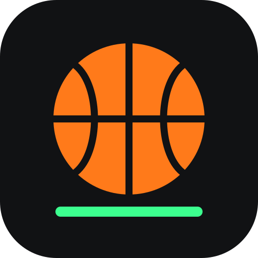

Hoops AI
Shot tracker that runs on this phone. No uploads.
- Phone in landscape on a tripod at the side of the court.
- Rim in the upper third of the picture, whole backboard in view.
- Tap the rim once, size the oval to match, then Start.
- Shoot. You'll hear each call: “Make. Seven of twelve.”
- Wrong call? Tap Fix to flip the last one.
Turn the phone sideways for the best view